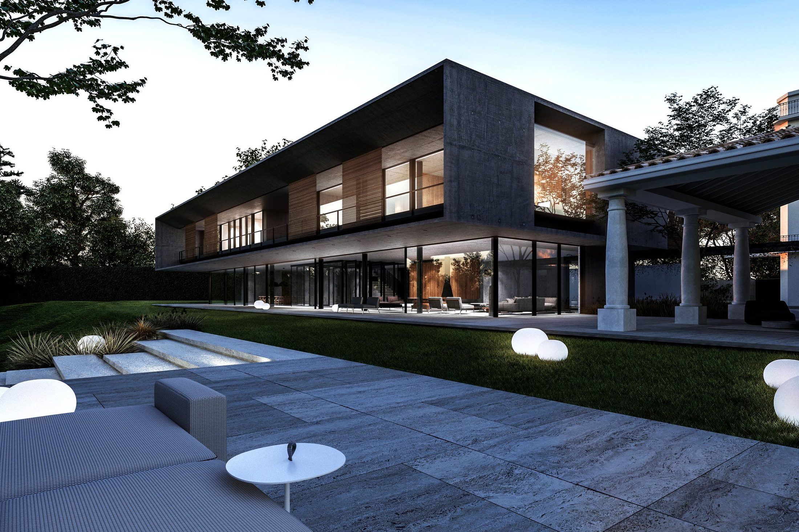
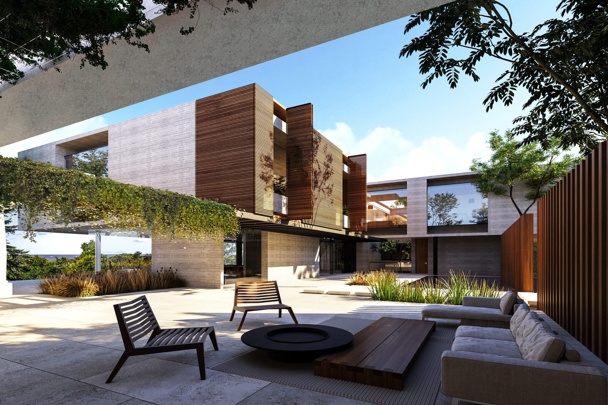
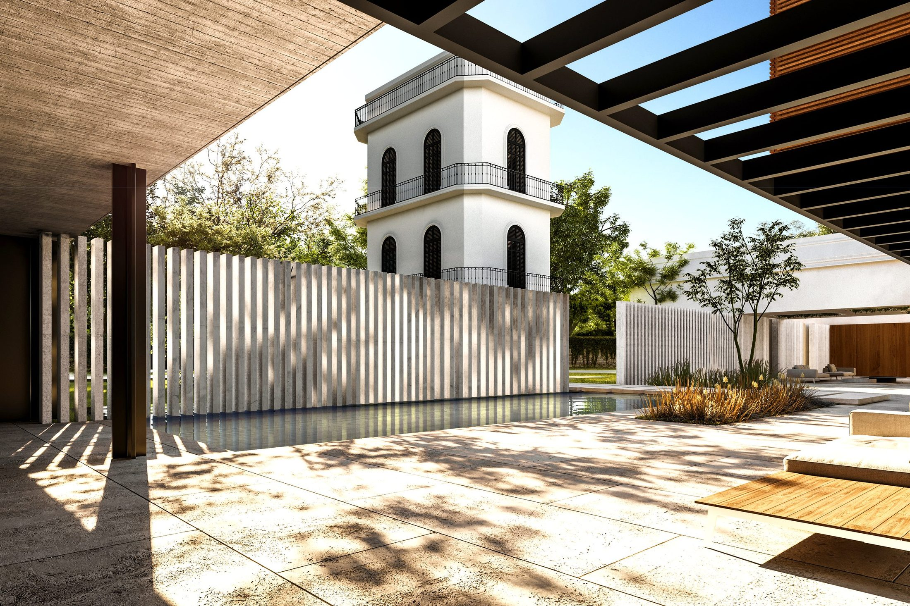
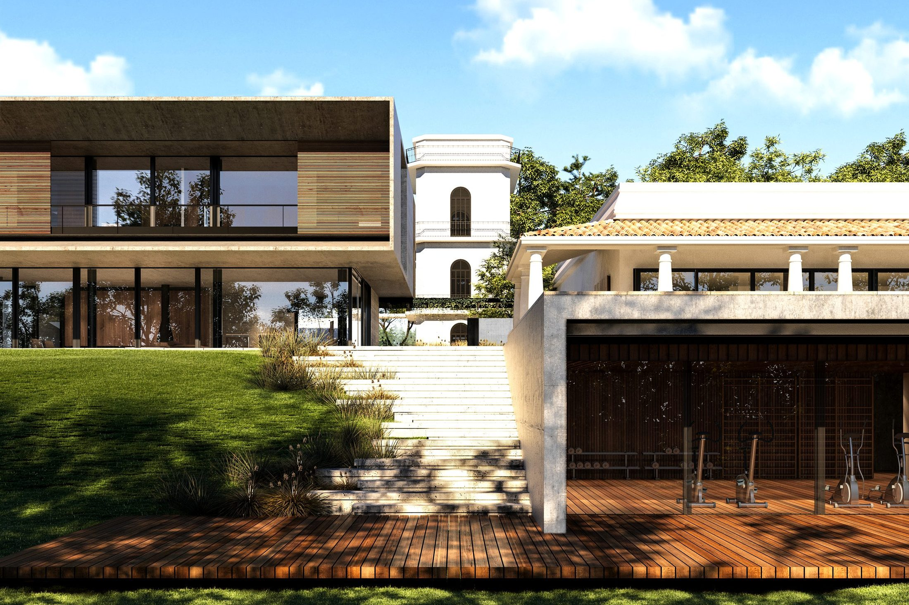
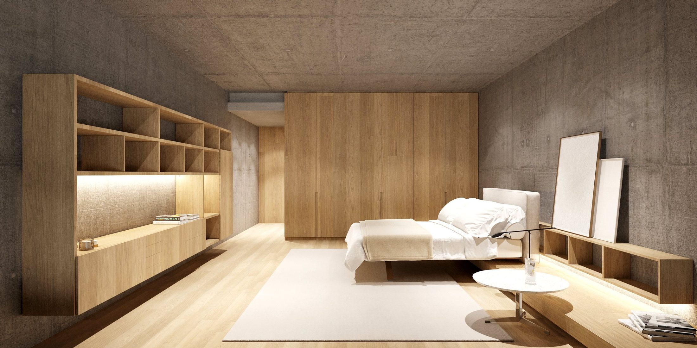

Vivienda unifamiliar · Barrancas de San Isidro, Buenos Aires · 2021–2025
Ficha técnica
Descripción
El Cortijo nace de una doble tensión: preservar la memoria de una casa colonial preexistente e integrarla a un lenguaje contemporáneo que dialogue con el paisaje de las barrancas. La respuesta proyectual apuesta por la sobriedad y la elegancia como actitud —no como estilo—, donde el hormigón visto de alta calidad no compite con el entorno, sino que lo enmarca.
El recorrido de la vivienda está concebido como una experiencia sensorial continua. Los juegos de luces, espacios y texturas invitan a transitar una arquitectura que muta según la hora del día: austera y mineral bajo el sol del mediodía, cálida y envolvente en las noches de verano. En cada punto de la planta, el Río de la Plata aparece como telón de fondo inevitable.
La preexistencia colonial no fue demolida sino absorbida, resignificada dentro de un conjunto que suma capas de tiempo sin forzar ninguna. El resultado es una vivienda que pertenece a su lugar.



